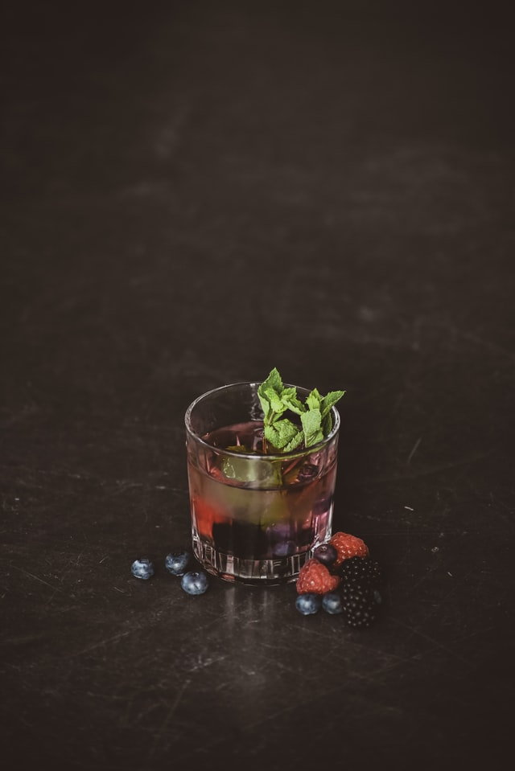

Stars & Stripes

HISTORY
Pay homage to the colors of the holiday with this fruity layered cocktail. Muddled blueberries lend blue to the
drink, a drizzle of raspberry brandy provides a red hue, and the sugar cube garnish gives a white touch and a
burst of sweetness to the drink.
INGREDIENTS
- 5 fresh bluberries
- 1 ounce of blueberry Vodka/li>
- 1/4 ounce absinthe
- 1/4 ounce of freshly squeezed lemon juice
- 1 drizzle raspberry brandy
STEPS
- In a shaker, muddle the blueberries
- Add the Vodka, absinthe, lemon juice and simple syrup with ice and shake until well-chilled
- Pour (unstrained) into a higball glass
- Drizzle with raspberry brandy
- Garnish with ice cube